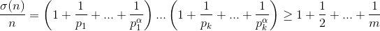

Could it be that a) σ $($n$)$ $>$ 3n; b) σ $($n$)$ $>$ 100n?
a) Using the formula from problem 60537, $σ (320) = σ (23 \times 3² \times 5) = 15 \times 13 \times 6 = 3 \times 390 > 3 \times 320$.
b) Let $p_1, p_2, p_3, ...$ be an increasing sequence of all primes. From problem number 34918, there is an m such that 1 + ½ + ... + 1/m $>$ 100. Let k and α be such that every number from 2 to m decomposes into a product of primes not exceeding $p_k$ in powers not exceeding α. We take $n = (p_1 ... p_k)^α$. Then  $>$ 100 $($all of the numbers 1, ½, ..., 1/m and some others are obtained when the parentheses are expanded$)$.
Yes, it can.